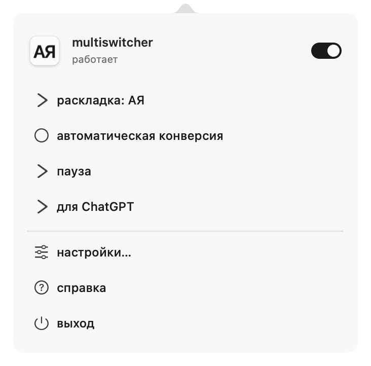
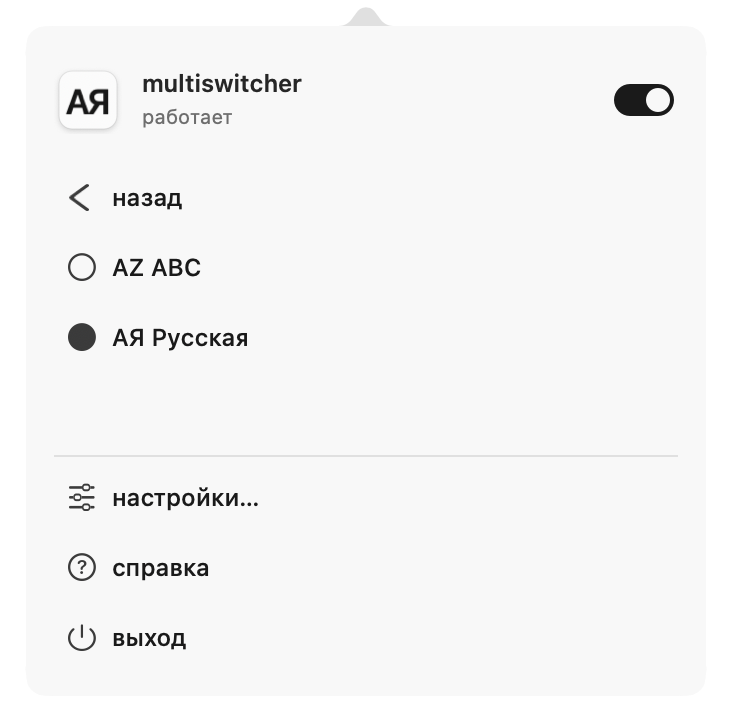
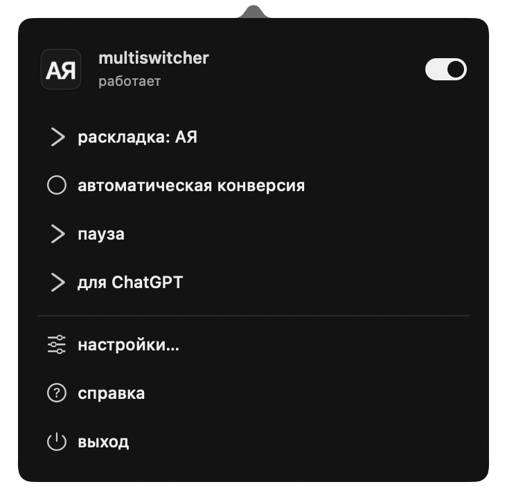
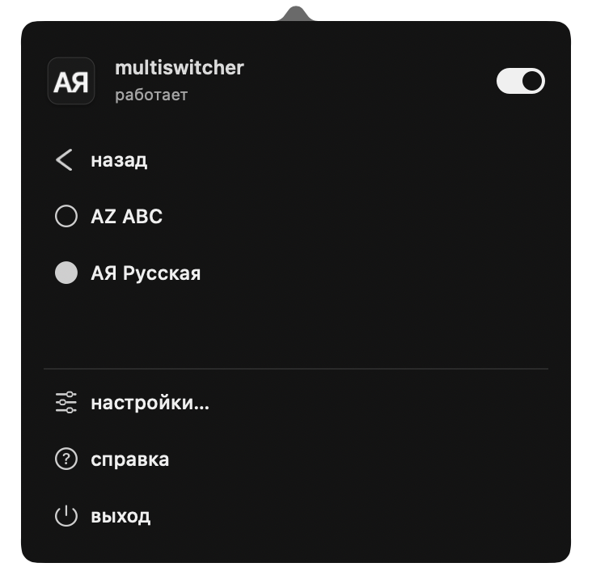
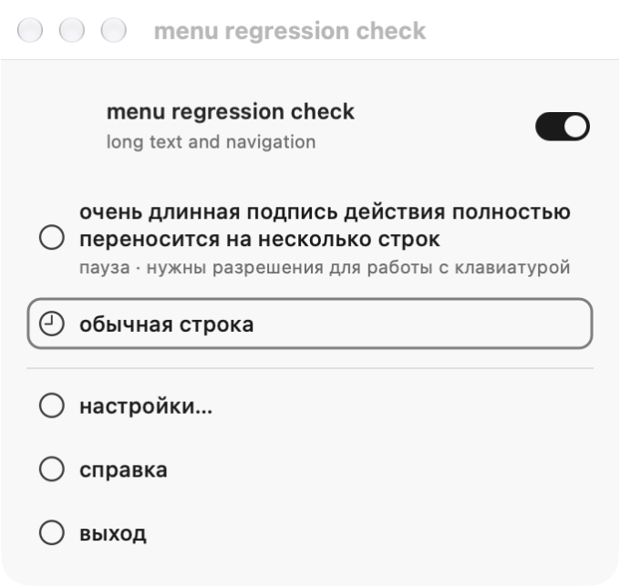

реальные окна обеих приложений. общий компонент: ширина 340 pt, отступ шапки 14 pt, верх иконки 20 pt, начало действий 70 pt. разные высоты соответствуют содержимому.




отдельное тестовое окно настоящего общего AppKit-компонента. данные синтетические; это регрессионная проверка, а не снимок пользовательской истории.
